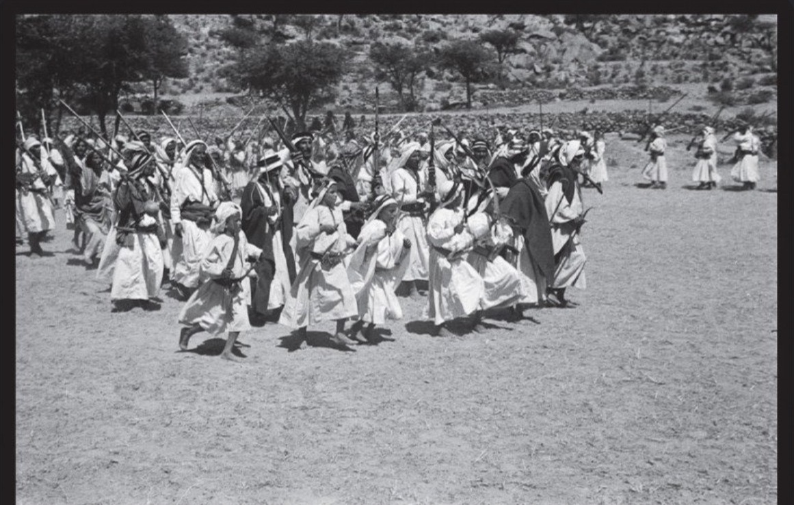

الأعلام
صفحة جامعة للأعلام والوجوه البارزة من قبائل الشعفين، على أن يُربط كل اسم بصفحته الخاصة أو بقبيلته عند اكتمال تحرير المواد وتوثيقها.
محتوى مبدئي
- أعلام آل يعلى وآل العريف.
- أعلام آل زخران وفي مقدمتهم الشيخ فَرّاس داخل صفحته الخاصة في آل زخران.
- رجالات القبائل وشيوخها ورواة أخبارها.